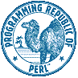

Help the Masses
Perl Conference 2.0
San Jose, CA
August 18, 1998
Chris Nandor
<pudge@pobox.com>
[
Main
]
[
Prev
]
© 1998. All Rights Reserved.
Compatibility and Portability
CPAN Testers
perlport
MacPerl 5.005